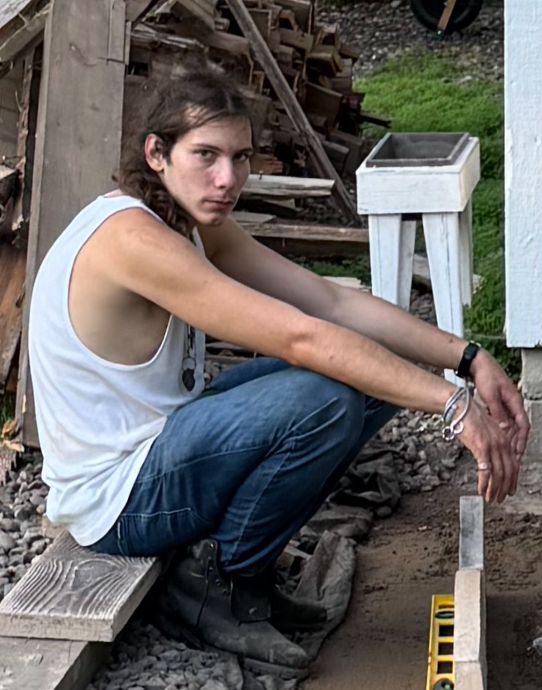

Victor Anton Munteanu Ciuruşniuc este un poet și artist român care și-a dedicat viața în căutarea iubirii, științei și frumuseții. Crescut într-o comunitate românească strâns unită, el a lucrat ani să învețe și să disemineze cultura românească. Inspirat din dorul pentru iubita și țara lui, el continuă să creeze lucrări bine gândite și în medii multiple.
